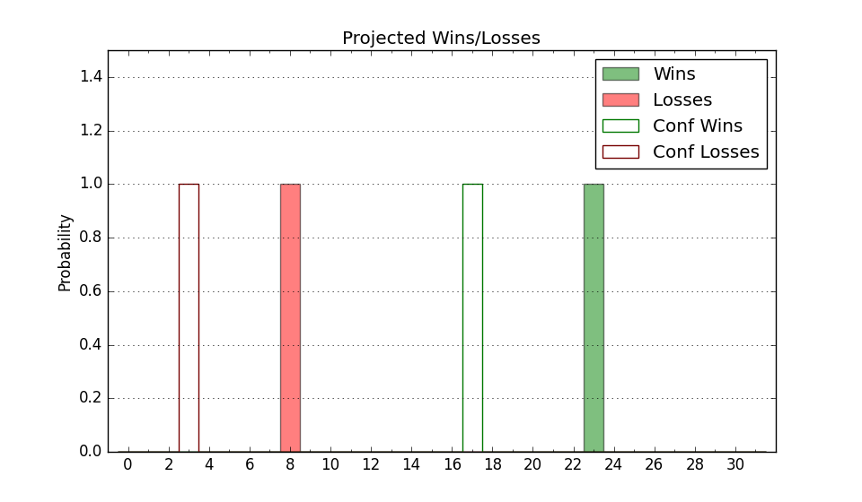

| Home | Game Probabilities | Conferences | Preseason Predictions | Odds Charts | NCAA Tournament |
| City: | Irvine, California | |
| Conference: | Big West (1st)
| |
| Record: | 17-3 (Conf) 23-8 (Overall) | |
| Ratings: | Comp.: 11.8 (75th) Net: 11.8 (75th) Off: 109.7 (104th) Def: 97.9 (47th) SoR: 14.1 (75th) |
| Remaining | ||||||
|---|---|---|---|---|---|---|
| Date | Opponent | Win Prob | Pred. | |||
| Previous | Game Score | |||||
| Date | Opponent | Win Prob | Result | Off | Def | Net |
| 11/7 | @San Jose St. (226) | 74.9% | L 64-72 | -25.8 | -4.6 | -30.4 |
| 11/11 | New Mexico St. (297) | 95.0% | W 91-74 | 8.8 | -11.8 | -3.1 |
| 11/14 | @USC (76) | 35.5% | W 70-60 | -3.0 | 26.4 | 23.4 |
| 11/21 | (N) Pepperdine (206) | 82.4% | W 76-60 | -4.4 | 5.9 | 1.5 |
| 11/22 | (N) Toledo (140) | 71.0% | W 77-71 | 3.0 | 7.7 | 10.6 |
| 11/24 | (N) Rice (217) | 83.5% | W 83-68 | 2.7 | 2.6 | 5.3 |
| 11/29 | @Duquesne (101) | 43.8% | L 62-66 | -11.9 | 1.3 | -10.6 |
| 12/2 | @Utah St. (47) | 24.9% | L 69-79 | 5.9 | -5.7 | 0.2 |
| 12/9 | @San Diego St. (25) | 18.6% | L 62-63 | 1.5 | 12.0 | 13.5 |
| 12/16 | South Dakota (323) | 96.6% | W 121-78 | 29.4 | -12.6 | 16.7 |
| 12/20 | @New Mexico (37) | 22.1% | L 65-78 | -10.1 | 10.3 | 0.2 |
| 12/28 | UC Riverside (233) | 91.3% | W 73-66 | -12.4 | -1.6 | -14.0 |
| 12/30 | @Cal St. Bakersfield (246) | 76.6% | W 75-56 | 7.4 | 9.1 | 16.5 |
| 1/4 | Cal St. Fullerton (241) | 91.5% | W 75-67 | 3.2 | -11.0 | -7.9 |
| 1/6 | UC Davis (169) | 86.0% | W 74-71 | -9.2 | -1.5 | -10.7 |
| 1/12 | @Hawaii (171) | 65.0% | W 60-50 | -5.8 | 19.9 | 14.1 |
| 1/18 | UC San Diego (129) | 79.3% | W 76-65 | -0.6 | 3.4 | 2.9 |
| 1/20 | @UC Davis (169) | 64.3% | L 52-54 | -29.4 | 17.3 | -12.0 |
| 1/25 | @Long Beach St. (184) | 68.3% | W 72-61 | -11.7 | 19.6 | 7.8 |
| 1/27 | Cal St. Northridge (234) | 91.3% | W 77-72 | -3.7 | -8.6 | -12.3 |
| 2/1 | @Cal Poly (338) | 92.1% | W 73-59 | 0.2 | -0.9 | -0.7 |
| 2/3 | Hawaii (171) | 86.3% | W 93-68 | 26.5 | -9.4 | 17.1 |
| 2/8 | @UC Santa Barbara (204) | 71.1% | W 76-61 | 8.4 | 1.2 | 9.6 |
| 2/10 | @UC Riverside (233) | 75.5% | L 78-88 | -0.1 | -27.1 | -27.2 |
| 2/17 | Cal St. Bakersfield (246) | 91.8% | W 77-71 | 0.4 | -16.1 | -15.8 |
| 2/22 | UC Santa Barbara (204) | 89.3% | W 81-69 | -3.4 | -3.3 | -6.7 |
| 2/24 | @UC San Diego (129) | 52.9% | L 88-92 | 10.8 | -8.7 | 2.1 |
| 2/29 | @Cal St. Northridge (234) | 75.5% | W 89-64 | 4.8 | 12.5 | 17.3 |
| 3/2 | Long Beach St. (184) | 88.0% | W 82-61 | 1.3 | 7.3 | 8.7 |
| 3/7 | Cal Poly (338) | 97.5% | W 82-68 | 2.1 | -24.9 | -22.8 |
| 3/9 | @Cal St. Fullerton (241) | 75.9% | W 81-71 | 16.1 | -10.7 | 5.4 |
| Stats & Trends | |||||
|---|---|---|---|---|---|
| Current | Day | Week | Month | Season | |
| Composite | 11.8 | +0.2 | -0.5 | -1.1 | +8.1 |
| Comp Rank | 75 | +2 | -- | -4 | +46 |
| Net Efficiency | 11.8 | +0.2 | -0.5 | -1.3 | -- |
| Net Rank | 75 | +2 | -- | -5 | -- |
| Off Efficiency | 109.7 | +0.4 | +0.6 | +1.6 | -- |
| Off Rank | 104 | +5 | +9 | +12 | -- |
| Def Efficiency | 97.9 | -0.2 | -1.0 | -2.9 | -- |
| Def Rank | 47 | +1 | -5 | -18 | -- |
| SoS Rank | 179 | -- | -11 | -23 | -- |
| Exp. Wins | 23.0 | +0.2 | +0.3 | -0.2 | +5.7 |
| Exp. Conf Wins | 17.0 | +0.2 | +0.3 | -0.2 | +4.4 |
| Conf Champ Prob | 100.0 | -- | +0.4 | +13.8 | +77.9 |

| Advanced Stats | ||
|---|---|---|
| Stat | Value | Rank |
| Off Eff FG % | 0.520 | 132 |
| Off Ast Ratio | 0.161 | 66 |
| Off ORB% | 0.311 | 84 |
| Off TO Rate | 0.149 | 187 |
| Off FT Ratio | 0.335 | 169 |
| Def Eff FG % | 0.460 | 38 |
| Def Ast Ratio | 0.128 | 75 |
| Def ORB% | 0.260 | 105 |
| Def TO Rate | 0.145 | 186 |
| Def FT Ratio | 0.347 | 237 |